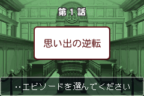

Gyakuten Saiban 3 (Japan) (Virtual Console)
SRAM 256K
Cartridge Identity
- Game Code
A3JJ(FamilyA3J)- Header Title
GYAKUTEN_SA3- Maker / Revision
08/ rev0- ROM Size
- 8.0 MiB (8,388,608 B)
- Save Media
SRAM 256K- SHA-256
aeb994eb3857a8d51ea312be7158e7b1db8f88fcd9f361bf3af8084d3f0539b4- Engine / SDK Group
comm-049(3 families)
Screenshots

ROM Assets, Compression & Audio
- BIOS Compression
- LZ77 (
0x10): 1,761 streams · RLE (0x30): 2 streams - ROM Pointer Tables
- 106 tables (5 pointing to validated compressed streams)
- SDK Backup Tags
SRAM_V112
Hardware MMIO Subsystems
irq_control0x80009bcppu_display0x80009bc,0x8004cb0save_bus_sram_flash0x800ac40
Regional Variants & Revisions (Family A3J)
- Gyakuten Saiban 3 (Japan) (
A3JJ, 8 MiB)